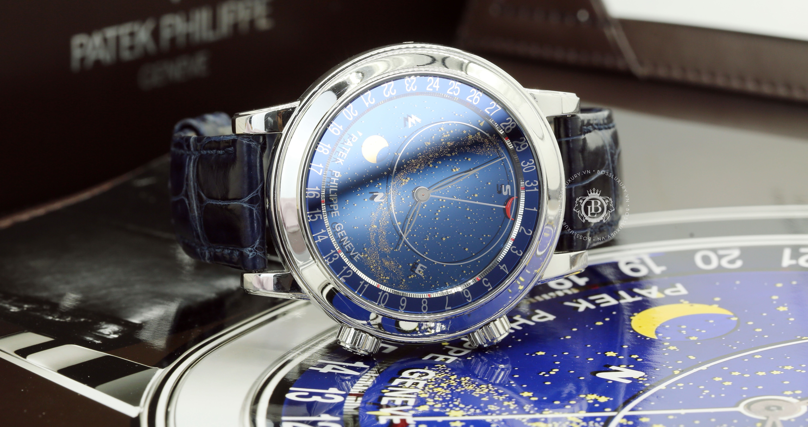
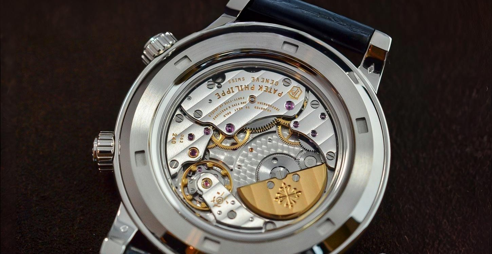
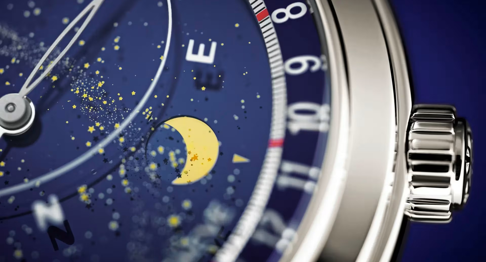
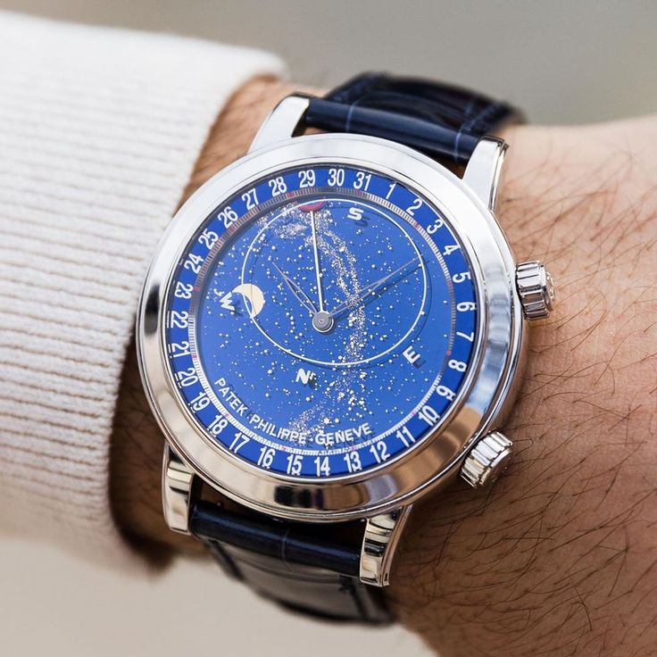

RELOJ CELESTIAL
El Patek Philippe Celestial es un reloj de lujo astronómico que muestra:
- La configuración exacta del cielo en el hemisferio norte.
- El movimiento aparente de las estrellas y las fases de la Luna.
- Diseño y precisión que lo convierten en una pieza única dentro de la alta relojería.

ASTRONOMÍA EN TU MUÑECA

Alta precisión astronómica
Calcula con exactitud el día lunar, la lunación y el día sideral.
Representación del cielo nocturno
Muestra la configuración del cielo en el hemisferio norte.
Hora sideral
Mide el tiempo basado en la rotación de la Tierra con las estrellas fijas.
LO QUE LO HACE ÚNICO
Este reloj cuenta con varias funciones y está elaborado con materiales únicos

Disco de fase lunar
Corona principal
Correa azul de aligátor
Caja de titanio
Corona astronómica






OTROS MODELOS
Explora todos los modelos que podemos ofrecerte.

CELESTIAL JOAILLERIE
6104R-001Rose Gold

CELESTIAL
6102P-001Platinum

CELESTIAL
6102R-001Rose Gold